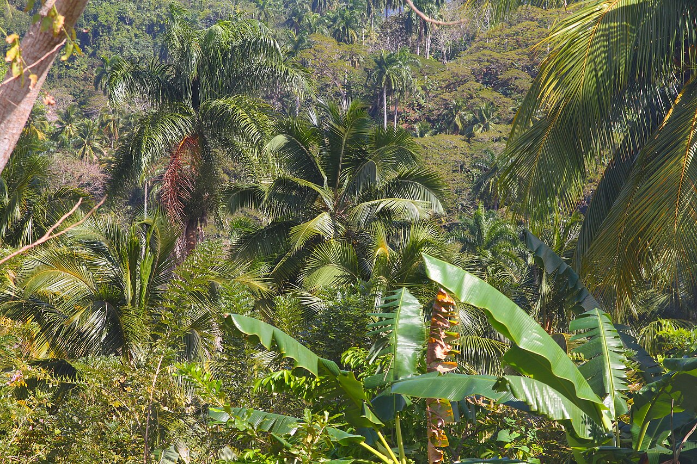
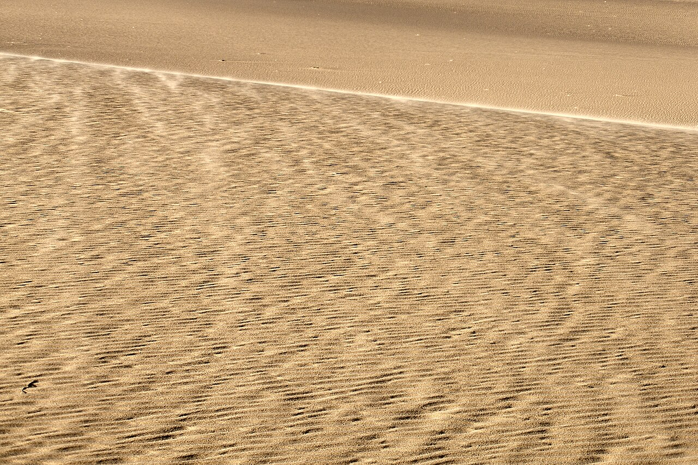
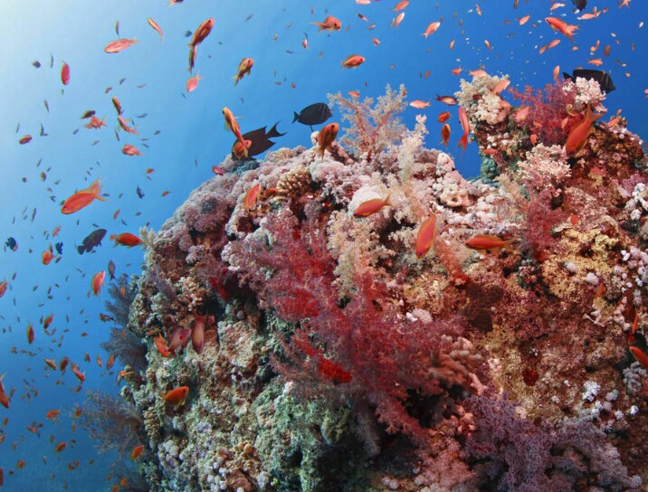
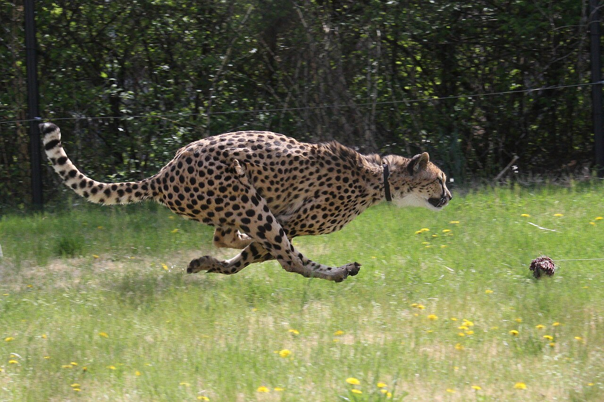
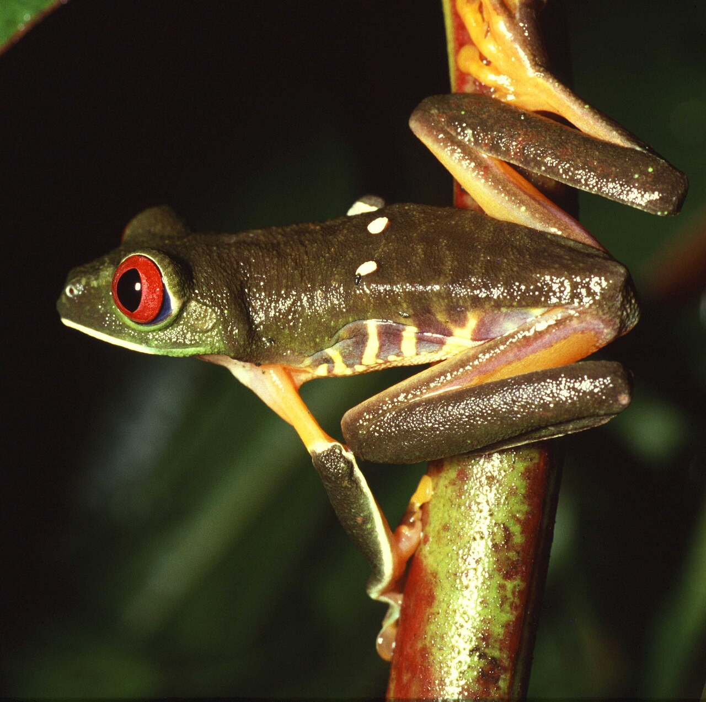

Where shall we go? 🧭
🌡️ Which places are hot? Which are cold?
🎒 What would you pack for each one?
⭐ Pick one — tell me why!
In 2026, Sir David Attenborough celebrated an extraordinary milestone: his 100th birthday. After a whole century of life and a lifetime of adventure, he is still passionate about the natural world and still inspiring people, young and old, to cherish and protect it. His message is simple but powerful: our planet is precious, and it is up to all of us to take care of it.
A century = 100 years. 🎂 What else might you have 100 of? 💯


David in numbers!
David was born in 1926. How old was he in 1976? And in 2000? 🧮

Words that sound ‘just right’!
A collocation is two or more words that usually go together. If you swap one word, it sounds a little odd — even if it isn’t exactly wrong!
These all sound just right. Say each one out loud! 🗣️

wild animals
the natural worldprotect the planetJust a Minute! ⏱️
Tap a topic to start the timer — your tutor is the timekeeper! 🐾
A wild animal you love
Take a breath… and off you go! 🐾
Just a Minute 2! ⏱️
Round two! Can you go the whole minute this time? 🔥
A wild animal you love
Take a breath… and off you go! 🐾

- 1Finish your limerick — then write one more about an animal of your choice. 🐸
- 2Write five collocations using make or take (like make a cake, take a break). 🧩
- 3Choose a Just a Minute topic and write four sentences to practise for next time. 🎤
Tell me without looking: what is a collocation? Do we make or do a mistake? 🤔
Coming next time
Plurals — the rules for ‘more than one’, including the tricky ones (mouse → mice!). 🐭🐭